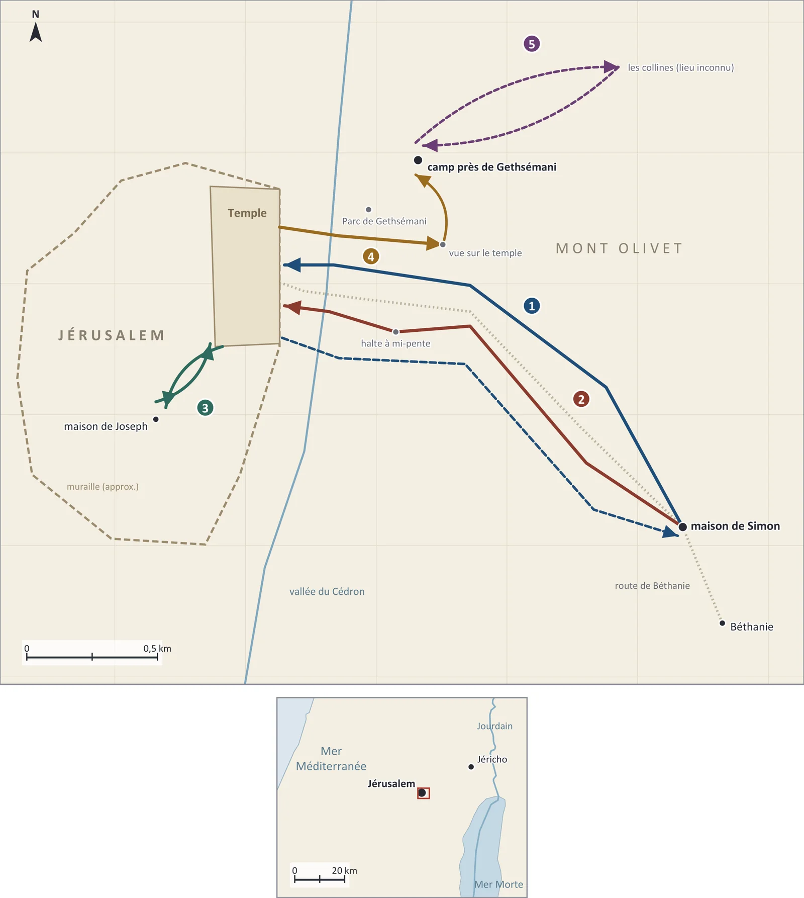
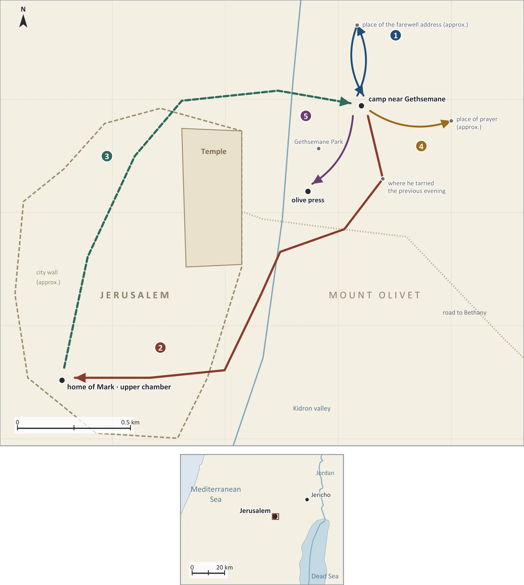
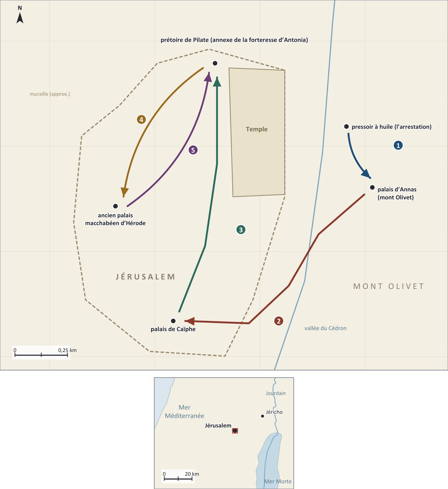

Partie VI Les évènements qui mènent à l’arrestation et à la croix
Fascicules 171–188
Fascicule 171Sur le chemin de Jérusalemmars de l’an 30
| Évènement | Livre d’Urantia | Bible |
|---|---|---|
| Préparatifs du départ pour Jérusalem | 171:0.1–7 | Mt 20:20-28; Mc 10:35-45 |
| Le lendemain du sermon sur le royaume, Jésus annonça qu’il monterait à la Pâque à Jérusalem en passant par la Pérée méridionale, et ses disciples supposèrent qu’il allait établir le royaume temporel. Ce dimanche après-midi, la demande de Salomé pour ses fils irrita les apôtres, et Jésus enseigna que quiconque veut être grand doit être serviteur. | ||
| La demande de Salomé et des fils de Zébédée | 171:0.4–7 | Mt 20:20-28; Mc 10:35-45 |
| Le dimanche après-midi, à Pella, Salomé vint avec ses fils Jacques et Jean et demanda qu’ils siègent à la droite et à la gauche de Jésus dans le royaume qu’il allait établir à Jérusalem. Jésus dit qu’il appartient au Père de décider de ces places et enseigna aux dix le service. Ce soir-là, grâce aux efforts de Pierre, les deux frères présentèrent leurs excuses.Diffère de la BibleMatthieu dit que la mère fit la demande et Marc que ce furent les fils, alors que dans le Livre d’Urantia Salomé vient avec ses fils pour la présenter. La parole sur la rançon est absente, et les excuses obtenues par la médiation de Pierre sont ajoutées. | ||
| 1. Le départ de Pella | 171:1.1–6 | Aucun |
| Le lundi matin 13 mars, Jésus et les douze prirent définitivement congé du camp de Pella et se dirigèrent vers la Pérée méridionale, suivis d’environ mille disciples. Le mercredi 15 mars, sur les instructions d’André, David Zébédée ferma le camp des visiteurs, vendit le matériel et remit plus tard l’argent à Judas Iscariot. | ||
| 2. L’évaluation du prix | 171:2.1–6 | Lc 14:25-35 |
| Au gué de Béthanie sur le Jourdain, les disciples hésitèrent en apprenant que Jésus n’allait pas directement à Jérusalem. Jésus monta sur un gros rocher et prononça le discours sur « l’Évaluation du prix », citant l’homme qui bâtit une tour et le roi qui part en guerre, et il demanda un dévouement allant jusqu’au don de la vie même. Environ cinq-cents le suivirent alors vers Hesbon.Diffère de la BibleL’Évangile de Luc dit de haïr père, mère, femme, enfants et sa propre vie, alors que le Livre d’Urantia dit d’être disposé à les abandonner, et situe le discours sur un gros rocher au gué du Jourdain. | ||
| 3. La tournée en PéréeCarte 32-③ Tournée de la Pérée méridionale | 171:3.1–5 | Aucun |
| Pendant plus de deux semaines, Jésus et les douze visitèrent les villes de la Pérée méridionale où travaillaient les soixante-dix. À Hesbon, Jésus vit Abner pour la dernière fois et lui dit de poursuivre l’œuvre. Bien que les apôtres aient su que le sanhédrin avait condamné Jésus, la résurrection de Lazare les laissait dans une attente paisible plutôt que dans la peur. | ||
| 4. Enseignement à Livias | 171:4.1–9 | Mt 20:17-19; Mc 10:32-34; Lc 13:31-35; 18:31-34 |
| Le mercredi soir 29 mars, au camp de Livias, Simon Zélotès et Simon Pierre reçurent plus de cent épées et les distribuèrent. Le lendemain matin, Jésus prédit de nouveau sa mort et sa résurrection le troisième jour, répondit à l’avertissement concernant Hérode et partit pour Jérusalem en passant par Jéricho. | ||
| À Livias, Jésus prédit de nouveau sa mort | 171:4.2–3 | Mt 20:17-19; Mc 10:32-34; Lc 18:31-34 |
| Tôt le jeudi matin, à Livias, Jésus fit réveiller les apôtres par André et les avertit de ne pas se fier aux défenses de la chair. Il dit que le Fils de l’Homme serait livré aux principaux prêtres et aux Gentils, raillé et mis à mort, mais qu’il ressusciterait le troisième jour. Aveuglés par l’espoir d’un royaume temporel, ils ne voulurent pas prendre ses paroles à la lettre.Diffère de la BibleLes Évangiles situent cette scène sur la route qui monte à Jérusalem, alors que le Livre d’Urantia la place à Livias, le matin qui suivit la distribution des épées, et dit que les apôtres prirent le troisième jour pour une figure de style signifiant un court laps de temps. | ||
| L’avertissement au sujet d’Hérode et la réponse de Jésus | 171:4.4–7 | Lc 13:31-35 |
| À Livias, juste après le petit déjeuner, des pharisiens amicaux avertirent Jésus de fuir parce qu’Hérode cherchait à le tuer. Jésus leur dit d’aller dire à ce renard que le Fils de l’Homme prêcherait aujourd’hui en Pérée et irait demain en Judée, se lamenta sur Jérusalem qui tue les prophètes et dit qu’ils monteraient à la Pâque.Diffère de la BibleL’Évangile de Luc ne nomme aucun lieu, alors que le Livre d’Urantia situe la scène à Livias et explique qu’Hérode voulait en réalité chasser Jésus de ses domaines plutôt que le tuer ; chasser les démons et guérir devient prêcher. | ||
| 5. L’aveugle de JérichoCarte 32-④ Par Jéricho jusqu’à Béthanie | 171:5.1–3 | Mt 20:29-34; Mc 10:46-52; Lc 18:35-43 |
| Tard le jeudi après-midi 30 mars, comme Jésus et environ deux-cents disciples approchaient de la porte de Jéricho, le vieux mendiant Bartimée, aveugle depuis sa jeunesse, l’appela à grands cris. Réprimandé, il cria plus fort, et Jésus l’appela et, voyant sa foi, lui rendit la vue. Bartimée resta auprès de Jésus jusqu’à son départ le lendemain.Diffère de la BibleL’Évangile de Matthieu parle de deux aveugles au moment où Jésus quittait Jéricho, alors que le Livre d’Urantia parle du seul Bartimée au moment où Jésus entrait dans la ville, et ajoute qu’il avait résolu de chercher la guérison après avoir appris la guérison de l’aveugle Josias à Jérusalem. | ||
| 6. La visite à Zachée | 171:6.1–4 | Lc 19:1-10 |
| En entrant dans Jéricho vers le coucher du soleil, Jésus appela Zachée, le chef des publicains, de petite taille, qui était monté sur un sycomore, et lui dit qu’il logerait chez lui. Quand un pharisien protesta, Zachée promit de donner la moitié de ses biens aux pauvres et de rendre au quadruple ce qu’il avait pris injustement, et Jésus déclara que le salut était venu dans cette maison.Diffère de la BibleL’Évangile de Luc dit que Zachée parla au Seigneur, alors que le Livre d’Urantia dit qu’il monta sur une chaise et fit sa déclaration publiquement devant les habitants de Jéricho, et que Jésus dit qu’il était devenu en vérité un fils d’Abraham. | ||
| 7. « Tandis que Jésus passait » | 171:7.1–10 | Aucun |
| Jésus répandait la bonne humeur partout où il allait et ne se hâtait jamais, réconfortant et aidant les gens sur son passage. Parce qu’il comprenait et aimait vraiment les hommes, il manifestait une sympathie sincère, et la plupart de ses œuvres importantes se firent incidemment, en chemin. Ses disciples doivent de même apprendre à faire le bien dans le cours de la vie quotidienne. | ||
| 8. La parabole des mines | 171:8.1–15 | Lc 19:11-28 |
| Quittant Jéricho vers midi, Jésus s’arrêta pour déjeuner à mi-chemin de la route de Béthanie et raconta aux apôtres la parabole des mines. Fondée sur l’expérience d’Archelaüs, elle parlait d’un noble rejeté qui confia une mine à chacun de douze serviteurs et leur demanda des comptes à son retour. Nathanael en enseigna plus tard le sens en quatre points.Diffère de la BibleL’Évangile de Luc parle de dix serviteurs et se termine par le massacre des ennemis du noble, alors que le Livre d’Urantia confie les mines à douze serviteurs, les apôtres, fonde l’histoire sur Archelaüs et omet l’exécution des ennemis. | ||
Fascicule 172L’entrée à Jérusalemmars – avril de l’an 30
| Évènement | Livre d’Urantia | Bible |
|---|---|---|
| (Introduction) | 172:0.1–3 | Aucun |
| Peu après quatre heures de l’après-midi, le vendredi 31 mars de l’an 30, Jésus et les apôtres arrivèrent à Béthanie, et Jésus logea chez Simon, un croyant du voisinage. Les chefs des prêtres décidèrent de ne pas se saisir de lui au milieu de ses amis, mais d’attendre qu’il entre à Jérusalem. Cette nuit-là, les apôtres, armés d’épées, montèrent la garde auprès de lui deux par deux. | ||
| 1. Le sabbat à Béthanie | 172:1.1–9 | Mt 26:6-13; Mc 14:3-9; Jn 11:55; 12:1-11 |
| Le soir du sabbat, six jours avant la Pâque, les gens de Béthanie et de Bethphagé donnèrent un banquet dans la maison de Simon en l’honneur de Jésus et de Lazare. Marie versa de l’onguent de nard sur la tête et les pieds de Jésus ; Judas parla de gaspillage, mais Jésus la défendit en disant qu’elle préparait son ensevelissement. Judas résolut de se venger de ce reproche.Diffère de la BibleMatthieu et Marc situent la scène dans la maison de Simon le lépreux, où une femme oint sa tête, tandis que, dans le Livre d’Urantia, c’est Marie qui oint sa tête et ses pieds, chez Simon, le croyant du voisinage. Contrairement à Jean, le livre ne qualifie pas Judas de voleur. | ||
| 2. Le dimanche matin avec les apôtres | 172:2.1–5 | Aucun |
| Le dimanche matin, dans le jardin de Simon, Jésus donna aux douze ses dernières instructions avant d’entrer à Jérusalem : ne faire aucun travail public pendant la Pâque, et rester près de lui pour veiller et prier. Il conseilla ensuite à Lazare de ne pas perdre la vie à cause de la vengeance du sanhédrin. | ||
| 3. Le départ pour JérusalemCarte 32-⑤ Entrée à Jérusalem, 2 avril (encadré) | 172:3.1–16 | Mt 21:1-11; Mc 11:1-10; Lc 19:29-44; Jn 12:12-19 |
| À une heure et demie, le dimanche après-midi, Jésus fit son entrée publique à Jérusalem sur un ânon, conformément aux paroles de Zacharie. Pierre et Jean amenèrent l’ânon de Bethphagé, et les foules étendirent des vêtements et des branches en criant hosanna. Du sommet d’Olivet, Jésus pleura sur Jérusalem, et des milliers de gens sortirent de la ville pour venir à sa rencontre.Diffère de la BibleLes Évangiles disent que deux disciples non nommés furent envoyés, et Matthieu mentionne à la fois une ânesse et un ânon, tandis que le Livre d’Urantia dit que Pierre et Jean n’amenèrent que l’ânon, et que la foule venue l’accueillir résulta de la nouvelle répandue par David Zébédée. | ||
| 4. La visite au temple | 172:4.1–3 | Mc 12:41-44; Lc 21:1-4 |
| Pendant que les jumeaux Alphée rendaient l’ânon, Jésus et les dix apôtres se promenèrent dans le temple en observant les préparatifs de la Pâque. Vers le soir, près du trésor, Jésus vit une pauvre veuve y mettre deux pites et dit qu’elle avait donné plus que tous les autres, car elle avait donné tout ce qu’elle avait pour vivre. Ils retournèrent ensuite à Béthanie pour se reposer.Diffère de la BibleMarc et Luc situent l’offrande de la veuve quelques jours plus tard, pendant que Jésus enseignait dans le temple, tandis que le Livre d’Urantia la place le soir du dimanche de l’entrée, pendant qu’ils visitaient le temple. | ||
| 5. L’attitude des apôtres | 172:5.1–13 | Aucun |
| En revenant à Béthanie le dimanche soir, les apôtres restèrent silencieux. Pierre et Jacques étaient déçus que Jésus n’eût pas proclamé le royaume ; Jean et Matthieu se rappelaient la prophétie de Zacharie ; Nathanael et Thomas voyaient dans l’entrée un moyen d’empêcher son arrestation. Judas, piqué par les railleries d’un ami sadducéen, était déjà un déserteur dans son cœur. | ||
Fascicule 173Le lundi à Jérusalemavril de l’an 30
| Évènement | Livre d’Urantia | Bible |
|---|---|---|
| Carte 33De Béthanie au temple et au camp de Gethsémani3–5 avril de l’an 30 | ||
| (Introduction)Carte 33-① Lundi 3 avril · de Béthanie au temple | 173:0.1–3 | Aucun |
| De bonne heure le lundi matin, Jésus et les apôtres se retrouvèrent chez Simon à Béthanie et partirent pour Jérusalem. Les apôtres étaient silencieux à cause de sa consigne de ne donner aucun enseignement public pendant la semaine de la Pâque, et Judas réfléchissait à la manière de se retirer. Vers neuf heures, Jésus monta sur une estrade dans la grande cour du temple et commença à enseigner. | ||
| 1. L’épuration du temple | 173:1.1–11 | Mt 21:12-17; Mc 11:15-19; Lc 19:45-48; Jn 2:13-17 |
| La vente des animaux destinés aux sacrifices et le change de la monnaie dans les cours du temple rapportaient d’énormes profits à la famille du grand-prêtre. Le lundi matin, Jésus prit un fouet de cordes des mains d’un garçon et chassa les animaux, les pèlerins renversèrent les tables des changeurs, et en cinq minutes le commerce fut balayé. La cour resta calme pendant que Jésus enseignait toute la journée.Diffère de la BibleL’Évangile de Jean place la purification au début du ministère, tandis que le Livre d’Urantia la situe le lundi de la dernière semaine ; et, alors que les Évangiles disent que Jésus renversa les tables, le Livre d’Urantia dit que ce furent les pèlerins. | ||
| 2. Contestation de l’autorité du Maitre | 173:2.1–8 | Mt 21:23-27; Mc 11:27-33; Lc 20:1-8 |
| Lors de sa réunion de midi, le sanhédrin résolut de faire périr Jésus et désigna cinq groupes pour lui tendre des pièges. Vers deux heures, les anciens d’Israël lui demandèrent par quelle autorité il faisait ces choses. Jésus leur demanda si le baptême de Jean venait du ciel ou des hommes et, lorsqu’ils dirent qu’ils ne savaient pas, il refusa de répondre.Diffère de la BibleLes Évangiles disent que ce furent les chefs des prêtres, les scribes et les anciens qui posèrent la question, tandis que le Livre d’Urantia dit que ce fut le groupe des anciens, l’un des cinq désignés par le sanhédrin, et explique que Jésus ne fondait pas son autorité sur Jean. | ||
| 3. La parabole des deux fils | 173:3.1–4 | Mt 21:28-32 |
| Aux pharisiens restés muets, Jésus parla de deux fils. L’un refusa d’aller travailler dans la vigne, mais ensuite se repentit et y alla ; le fils ainé promit d’y aller, mais n’y alla pas. C’est le premier qui fit la volonté du père, dit-il, et les publicains et les prostituées entreraient dans le royaume avant eux. Les apôtres ne prirent aucune part à ces échanges.Diffère de la BibleChez Matthieu, le fils ainé dit qu’il ira et n’y va pas, et le second se repent et y va ; le Livre d’Urantia inverse l’ordre : le fils sollicité en premier refuse, puis y va, et le fils ainé n’y va pas. | ||
| 4. La parabole du propriétaire absent | 173:4.1–5 | Mt 21:33-46; Mc 12:1-12; Lc 20:9-19 |
| Jésus raconta à la foule l’histoire d’un propriétaire qui loua sa vigne à des métayers et partit pour un pays lointain. Les métayers tuèrent ses serviteurs et son intendant, et finalement son fils. Citant la pierre rejetée par les bâtisseurs et devenue la pierre angulaire, il avertit que le royaume serait enlevé à ceux qui le rejettent. Cette nuit-là, sadducéens et pharisiens unirent leurs forces.Diffère de la BibleDans les Évangiles, le fils est envoyé juste après les serviteurs, tandis que le Livre d’Urantia ajoute l’étape de l’envoi et du meurtre de l’intendant, le serviteur le plus digne de confiance. La parole selon laquelle quiconque tombe sur la pierre, bien que brisé, sera sauvé ne se trouve pas dans la Bible. | ||
| 5. La parabole du festin de mariage | 173:5.1–6 | Mt 22:1-14 |
| Jésus parla d’un roi dont les invités refusèrent de venir au festin de noces de son fils et tuèrent ses messagers ; le roi les fit périr et fit entrer tous ceux que l’on trouva sur les grands chemins. Un invité qui ne voulut pas revêtir l’habit de noces fourni gratuitement fut jeté dehors. Vers quatre heures, en retournant à Béthanie, Jésus ordonna d’installer un camp près de Gethsémani.Diffère de la BibleL’Évangile de Matthieu fait lier l’homme sans habit et le jette dans les ténèbres du dehors, en ajoutant qu’il y a peu d’élus, tandis que le Livre d’Urantia dit que le roi fournissait gratuitement les habits et que l’homme fut simplement jeté dehors. | ||
| « Détruisez ce temple, et en trois jours … » | 173:5.4 | Jn 2:18-22 |
| Après la parabole, un croyant bien disposé demanda un signe pour savoir que Jésus était le Fils de Dieu. Montrant son propre corps, Jésus dit : « Détruisez ce temple, et en trois jours je le relèverai. » Ni le peuple ni les apôtres ne comprirent, et c’est seulement après sa résurrection qu’ils se rappelèrent ces paroles.Diffère de la BibleL’Évangile de Jean place cette parole au début du ministère, après la purification du temple, en réponse aux Juifs qui exigeaient un signe, avec une construction de quarante-six ans, tandis que, dans le Livre d’Urantia, elle répond à un croyant pendant la dernière semaine et il est question de près de cinquante ans. | ||
Carte 33De Béthanie au temple et au camp de Gethsémani
3–5 avril de l’an 30 · Fascicules 173–177

- ①Lundi 3 avril · de Béthanie au templeDe grand matin, ils se réunirent chez Simon, descendirent le mont Olivet et arrivèrent au temple vers neuf heures ; Jésus enseigna dans la grande cour, et le temple fut purifié. Vers quatre heures, ils retournèrent à Béthanie (en tirets), et il ordonna d’établir un camp plus près de la ville. [173:0.1–3; 173:1; 173:5.5]
- ②Mardi 4 avril, matin · retour à la cour du templeVers sept heures, il fit ses adieux chez Simon. Se dirigeant vers Jérusalem avec quatre apôtres, il s’arrêta plus d’une heure environ à mi-pente d’Olivet, puis enseigna dans la cour du temple. [174:0.1–3; 174:2.2]
- ③Midi · la maison de JosephIl reçut les Grecs et prit la parole au déjeuner ; puis il ouvrit la marche par les rues étroites pour revenir au temple et, peu après deux heures, commença son dernier discours dans le temple. [174:5.2; 174:5.14; 175:0.1]
- ④Mardi soir · vers le camp près de GethsémaniEn quittant le temple, ils montèrent un peu sur le versant ouest d’Olivet ; contemplant le temple au soleil couchant, Jésus parla de sa destruction, puis ils gagnèrent le nouveau camp, un peu au-dessus du terrain de campement public. [176:0.1–2; 176:2.9]
- ⑤Mercredi 5 avril · une journée dans les collinesUne journée de repos. Jésus passa toute la journée seul dans les collines avec Jean Marc et revint au camp après le coucher du soleil. Le texte ne précise pas l’endroit dans les collines. [177:0.1–4; 177:1.3–5]
Fascicule 174Le mardi matin au templeavril de l’an 30
| Évènement | Livre d’Urantia | Bible |
|---|---|---|
| Salutations personnellesCarte 33-② Mardi 4 avril, matin · retour à la cour du temple | 174:0.1–3 | Aucun |
| Vers sept heures, le mardi matin, Jésus retrouva chez Simon les apôtres, le corps évangélique féminin et deux douzaines environ de disciples. Il donna à Lazare l’instruction qui le conduisit à fuir à Philadelphie et adressa ses conseils d’adieu au corps évangélique féminin. Après un mot personnel à chacun des douze, il partit pour Jérusalem avec André, Pierre, Jacques et Jean. | ||
| 1. Le pardon divin | 174:1.1–5 | Aucun |
| En descendant d’Olivet, Pierre demanda qui avait raison : Jacques, qui disait que le Père pardonne avant que nous le demandions, ou lui-même, qui soutenait que la repentance vient d’abord. Jésus enseigna que Dieu, tel un parent sage, comprend ses enfants, si bien que le pardon est inévitable ; le péché est une expérience de la conscience de la créature, et ceux qui aiment leurs frères leur ont déjà pardonné. | ||
| 2. Questions des dirigeants juifs | 174:2.1–5 | Mt 22:15-22; Mc 12:13-17; Lc 20:20-26 |
| Le lundi soir, une cinquantaine de dirigeants convinrent de discréditer Jésus en public. Le mardi matin, de jeunes étudiants bien entrainés, accompagnés d’hérodiens, demandèrent s’il était licite de payer le tribut à César. Jésus leur fit montrer un denier portant l’effigie de César et répondit : « Rendez à César ce qui appartient à César, et rendez à Dieu ce qui appartient à Dieu. »Diffère de la BibleMatthieu dit que les pharisiens envoyèrent leurs disciples, tandis que le Livre d’Urantia dit que vinrent de jeunes étudiants bien entrainés, et explique la réponse par la règle du sanhédrin selon laquelle le droit de battre monnaie comportait le droit de lever des impôts. | ||
| 3. Les sadducéens et la résurrection | 174:3.1–5 | Mt 22:23-33; Mc 12:18-27; Lc 20:27-40 |
| Un groupe de sadducéens demanda de qui serait l’épouse, à la résurrection, une femme mariée successivement à sept frères. Jésus répondit que les ressuscités ne se marient pas et ne sont pas donnés en mariage, mais sont comme les anges, et que le Père, le Dieu d’Abraham, d’Isaac et de Jacob, est le Dieu des vivants. Quelques pharisiens s’écrièrent qu’il avait bien répondu.Diffère de la BibleLes Évangiles ne donnent que la réponse, tandis que le Livre d’Urantia explique que Jésus ne cita que Moïse à des sadducéens qui n’acceptaient que les livres de Moïse, et qu’il n’approuva pas la croyance des pharisiens en une résurrection littérale du corps. | ||
| 4. Le grand commandement | 174:4.1–7 | Mt 22:34-46; Mc 12:28-37; Lc 20:41-44 |
| Un légiste du parti des pharisiens demanda quel était le plus grand commandement. Jésus répondit : aimer Dieu de tout son cœur, de toute son âme, de tout son mental et de toute sa force, et aimer son prochain comme soi-même. Il dit au légiste qu’il n’était pas loin du royaume, et cette nuit-là le légiste fut baptisé. Vers midi, Jésus demanda comment le Libérateur pouvait être le fils de David.Diffère de la BibleMatthieu dit seulement que le légiste posa la question pour le mettre à l’épreuve, tandis que le Livre d’Urantia dit qu’il fut félicité, qu’il professa sa foi cette nuit-là au camp et fut baptisé par Josias, et fait parler Jésus d’un seul commandement. | ||
| 5. Les Grecs investigateursCarte 33-③ Midi · la maison de Joseph | 174:5.1–14 | Jn 12:20-36 |
| Vers midi, le mardi, des Grecs croyants venus d’Alexandrie, d’Athènes et de Rome demandèrent à Philippe de voir Jésus, et Philippe et André les amenèrent à un déjeuner dans la maison de Joseph. Jésus parla du grain de blé et pria : « Père, glorifie ton nom », et l’Ajusteur Personnalisé apparut et répondit.Diffère de la BibleL’Évangile de Jean dit qu’une voix vint du ciel et que la foule crut à un coup de tonnerre ou à un ange, tandis que le Livre d’Urantia dit que ce fut l’Ajusteur Personnalisé qui parla, que les assistants n’entendirent pas la voix, et que la scène eut lieu lors d’un déjeuner dans la maison de Joseph. | ||
Fascicule 175Le dernier discours au templeavril de l’an 30
| Évènement | Livre d’Urantia | Bible |
|---|---|---|
| (Introduction) | 175:0.1–2 | Aucun |
| Peu après deux heures, le mardi après-midi, Jésus arriva au temple avec onze apôtres, Joseph d’Arimathie, les trente Grecs et quelques disciples, et commença son dernier discours. Les changeurs n’étaient pas revenus, si bien que la cour était calme. Ce discours fut son dernier appel au peuple juif et le réquisitoire final contre ses dirigeants. | ||
| 1. Le discours | 175:1.1–25 | Mt 23:1-39; Mc 12:38-40; Lc 20:45-47 |
| Dans les cours du temple, Jésus offrit une dernière chance de repentance aux dirigeants qui avaient rejeté la miséricorde du Père, et dit au peuple de suivre les paroles des scribes, mais non leurs actes. Il prononça des malédictions contre les hypocrites, déplora qu’il aurait voulu les rassembler comme une poule rassemble ses poussins, dit que leur maison était laissée déserte, et quitta le temple.Diffère de la BibleL’Évangile de Matthieu se termine par l’annonce qu’ils ne le verront plus jusqu’à ce qu’ils bénissent celui qui vient au nom du Seigneur, tandis que, dans le Livre d’Urantia, Jésus dit qu’il n’enseignera plus dans le temple, et le livre ajoute qu’il offre encore la miséricorde. | ||
| 2. Le statut individuel des Juifs | 175:2.1–3 | Aucun |
| Le rejet de Jésus et le complot des dirigeants juifs pour le faire mourir n’affectent en rien la situation d’aucun Juif en particulier devant Dieu. Jésus lui-même était juif, et les premiers martyrs de l’évangile furent des Juifs ; les révélateurs avertissent que la persécution des Juifs par des chrétiens déclarés ne peut jamais se justifier. | ||
| 3. La réunion décisive du sanhédrin | 175:3.1–3 | Aucun |
| À huit heures, le mardi soir, le sanhédrin se réunit et, juste avant minuit, le 4 avril de l’an 30, il vota à l’unanimité la condamnation à mort de Jésus et de Lazare. Ce fut le rejet de l’alliance divine. Les officiers reçurent l’ordre d’arrêter Jésus secrètement, et non en public, et de l’amener avant minuit le jeudi. | ||
| 4. La situation à Jérusalem | 175:4.1–15 | Aucun |
| Judas manqua la première moitié du discours, car il conférait avec des parents sadducéens au sujet de sa désertion, et la dénonciation le confirma dans sa décision d’abandonner l’évangile. Cette nuit-là, plus de trente croyants secrets se réunirent chez Nicodème et convinrent de reconnaitre ouvertement le Maitre à l’heure même de son arrestation. Le sanhédrin fixa sa réunion suivante chez Caïphe. | ||
Fascicule 176Le mardi soir sur le mont Olivetavril de l’an 30
| Évènement | Livre d’Urantia | Bible |
|---|---|---|
| La destruction du temple préditeCarte 33-④ Mardi soir · vers le camp près de Gethsémani | 176:0.1–2 | Mt 24:1-2; Mc 13:1-2; Lc 21:5-6 |
| Comme ils quittaient le temple le mardi après-midi, Matthieu fit remarquer ses pierres massives et ses ornements, et Jésus dit qu’il ne resterait pas pierre sur pierre. Le groupe gravit Olivet et s’assit pour regarder le temple resplendir au soleil couchant, puis sous la pleine lune, et Nathanael demanda comment ils sauraient quand ces choses arriveraient.Diffère de la BibleLes Évangiles disent que ce furent les disciples, l’un d’eux ou quelques personnes qui montrèrent les bâtiments, tandis que le Livre d’Urantia nomme Matthieu et dit que ce fut Nathanael qui posa la question du moment. | ||
| 1. La destruction de Jérusalem | 176:1.1–7 | Mt 24:3-28; Mc 13:3-23; Lc 21:7-24 |
| Sur Olivet, Jésus leur dit de ne craindre ni les faux libérateurs, ni les guerres, ni la persécution, et de fuir dans les collines quand les armées romaines encercleraient Jérusalem. Tenant compte de cet avertissement, les croyants s’enfuirent à Pella dès la première apparition des armées romaines. Quand Pierre l’interrogea sur son retour, Jésus le reprit pour avoir tenté de rattacher le nouvel enseignement à l’ancien.Diffère de la BibleLes Évangiles rattachent ces paroles aux signes de la fin du monde, à la seconde venue et à l’abomination de la désolation, tandis que le Livre d’Urantia les présente comme des instructions pratiques pour fuir la destruction de Jérusalem, et ajoute que les croyants se réfugièrent à Pella. | ||
| 2. La seconde venue du Maitre | 176:2.1–9 | Mt 24:29-44; Mc 13:24-37; Lc 21:25-36 |
| Jésus écarta l’attente que le Fils de l’Homme s’assiérait sur le trône de David, promettant d’être avec eux par l’Esprit de Vérité et de revenir un jour sur ce monde. Le moment n’est connu que des conseils du Paradis, et chacun rencontre individuellement le jugement et une nouvelle dispensation en franchissant les portes de la mort.Diffère de la BibleLes Évangiles parlent d’un soleil et d’une lune obscurcis et du Fils de l’Homme venant sur les nuées, tandis que le Livre d’Urantia dit qu’un écrit apocalyptique juif d’un certain Selta fut ici recopié dans Matthieu, et ne parle que d’un retour en puissance et en esprit. | ||
| 3. Suite de la discussion au camp | 176:3.1–10 | Mt 25:14-30 |
| Autour du feu de camp, Thomas demanda comment ils devaient se conduire pendant l’absence du Maitre. Jésus répondit que leur relation avec le royaume est spirituelle et personnelle, si bien que la chute des nations et la fin d’un âge ne peuvent ébranler un croyant. Chaque génération devrait travailler en ayant son retour à l’esprit, comme pour la mort, et une foi vivante doit porter les fruits de l’esprit.Diffère de la BibleLes Évangiles placent cette parabole dans le discours sur le mont des Oliviers, tandis que, dans le Livre d’Urantia, Jésus la prononce cette nuit-là, près du feu de camp de Gethsémani, devant une vingtaine de personnes, en réponse à la question de Thomas. | ||
| La parabole des talents | 176:3.4–9 | Mt 25:14-30 |
| Un homme partant pour un pays lointain confia à ses serviteurs cinq, deux et un talents selon leurs capacités. Deux d’entre eux doublèrent leurs talents, mais celui qui avait reçu un talent le cacha dans la terre et perdit même celui-là. Jésus et les révélateurs expliquent que se borner à conserver la vérité sous des formes figées est aussi une gestion stérile.Diffère de la BibleL’Évangile de Matthieu se termine en jetant le serviteur inutile dans les ténèbres du dehors, où il y a des pleurs et des grincements de dents, tandis que le Livre d’Urantia s’arrête au retrait de son talent et ajoute que se borner à conserver la vérité est aussi de la paresse. | ||
| 4. Le retour de Micaël | 176:4.1–7 | Aucun |
| En même temps qu’il promettait l’Esprit de Vérité, Jésus promit de revenir personnellement un jour sur ce monde, mais sans dire comment, où ni quand. Les révélateurs pensent que Micaël pourrait revenir plus d’une fois, mais ignorent le moment, et exhortent les croyants à ne pas lier son retour à des évènements particuliers, mais à être toujours prêts. | ||
Fascicule 177Le mercredi, jour de reposavril de l’an 30
| Évènement | Livre d’Urantia | Bible |
|---|---|---|
| (Introduction)Carte 33-⑤ Mercredi 5 avril · une journée dans les collines | 177:0.1–4 | Aucun |
| Le mercredi matin, Jésus dit aux apôtres de se reposer et de méditer, et dit à André qu’il serait absent toute la journée et que personne ne devait franchir les portes de Jérusalem. Il déclina l’offre de David Zébédée de lui donner trois gardes armés, disant qu’il désirait communier seul avec le Père, et Jean Marc s’avança avec un panier de provisions. | ||
| 1. Une journée seul avec Dieu | 177:1.1–6 | Aucun |
| Comme Jean Marc gardait le panier et demandait à l’accompagner, Jésus l’emmena dans les collines, où ils passèrent jusqu’après le coucher du soleil la dernière journée paisible du Maitre sur terre. Jésus assura le jeune homme qu’il survivrait pour devenir un puissant messager du royaume et lui recommanda de ne dire à personne ce qu’il avait entendu. | ||
| 2. L’enfance au foyer | 177:2.1–7 | Aucun |
| Comparant leurs enfances avec Jean Marc, Jésus dit que Jean se montrerait loyal parce que des parents aimants et sages l’avaient élevé, contrairement à son ami Amos, dont les parents trop indulgents ne l’avaient pas laissé venir. Comme un enfant se forme son concept du Père céleste d’après son père terrestre, la vie familiale des premières années façonne toute l’existence. | ||
| 3. La journée au camp | 177:3.1–8 | Aucun |
| Les apôtres passèrent la journée à rendre visite aux disciples sur Olivet en attendant Jésus, et Nathanael parla du désir suprême. David Zébédée apprit que la famille de Jésus venait à Jérusalem, mais garda la nouvelle secrète. Plus de vingt Grecs vinrent au camp et conférèrent avec Pierre et Jean, et les dirigeants furent surpris que Jésus ne parût pas. | ||
| 4. Judas et les chefs des prêtres | 177:4.1–12 | Mt 26:1-5, 14-16; Mc 14:1-2, 10-11; Lc 22:1-6 |
| Le mercredi, passant outre à la demande du Maitre, Judas se rendit à une réunion officieuse du sanhédrin chez Caïphe, introduit par son cousin, et demanda ce qu’on lui donnerait pour livrer Jésus discrètement. Caïphe promit une récompense après la livraison, et Judas convint avec le capitaine des gardes d’une arrestation le jeudi soir. Son mobile n’était pas l’argent, mais la gloire personnelle et la vengeance.Diffère de la BibleL’Évangile de Matthieu dit qu’on lui pesa trente pièces d’argent, et Luc dit que Satan entra en Judas, tandis que le Livre d’Urantia reporte la récompense après la trahison et attribue son mobile à la recherche de sa propre gloire et au ressentiment accumulé, plutôt qu’à l’argent. | ||
| 5. La dernière heure d’intimité | 177:5.1–6 | Aucun |
| Lors de l’heure de détente du mercredi soir au camp, Jésus s’efforça de réconforter les apôtres abattus, s’enquit de leurs familles et les avertit de ne pas compter sur l’appui de foules aux croyances superficielles, mais de veiller et de prier. Le bruit se répandit que Lazare s’était enfui de Béthanie, et ce fut le point le plus bas de la vie spirituelle des apôtres avant la mort de Jésus. | ||
Fascicule 178Le dernier jour au campavril de l’an 30
| Évènement | Livre d’Urantia | Bible |
|---|---|---|
| Carte 34Le camp de Gethsémani et la salle du hautJeudi 6 avril de l’an 30 | ||
| (Introduction)Carte 34-① Matin · le discours d’adieu | 178:0.1 | Aucun |
| Après le petit déjeuner du jeudi, Jésus conduisit les apôtres et les disciples juifs et gentils à un endroit isolé au-dessus du camp et adressa son discours d’adieu à tout le groupe du camp. Judas était absent ; certains pensaient qu’il avait été envoyé en ville pour préparer la Pâque, et il ne revint au camp qu’au milieu de l’après-midi. | ||
| 1. Discours sur la filiation et la citoyenneté | 178:1.1–18 | Aucun |
| Le jeudi en fin de matinée, Jésus enseigna pendant près de deux heures une cinquantaine de disciples de confiance sur la relation entre le royaume des cieux et les royaumes de ce monde, et entre la filiation et la citoyenneté. Les croyants doivent rendre à César et à Dieu ce qui leur est dû, ne jamais répandre la vérité par le pouvoir séculier et, en meilleurs citoyens, porter l’évangile comme une semence vivante. | ||
| 2. Après le repas du midiCarte 34-② Quatre heures et demie · vers la salle du haut | 178:2.1–12 | Mt 26:17-19; Mc 14:12-16; Lc 22:7-13 |
| À midi, tous savaient que Lazare s’était enfui. Quand David Zébédée demanda à Jésus s’il était au courant du complot de Judas, Jésus répondit qu’il savait tout et lui dit de ne rien dire. Il envoya Pierre, Jean et Philippe suivre un homme portant une cruche d’eau jusqu’à la salle du haut de la maison de Jean Marc, et Judas remit à David tous les fonds apostoliques.Diffère de la BibleLes Évangiles disent que les disciples furent envoyés pour préparer la Pâque, tandis que le Livre d’Urantia dit qu’il s’agissait d’un souper la veille de la Pâque, arrangé la veille par Jésus avec Jean Marc, et identifie le lieu comme la maison de Jean Marc. | ||
| 3. En chemin vers le souper | 178:3.1–6 | Aucun |
| Vers le coucher du soleil, le jeudi, Jésus et les douze franchirent le sommet ouest du mont Olivet en direction de la ville et s’arrêtèrent à l’endroit où il avait parlé la veille au soir. Il dit que, de même que le Père l’avait envoyé, il les enverrait, et les avertit de ne pas se mettre en danger pour défendre le Fils de l’Homme. Après le coucher du soleil, ils continuèrent jusqu’à la maison de Jean Marc. | ||
Carte 34Le camp de Gethsémani et la salle du haut
Jeudi 6 avril de l’an 30 · Fascicules 178–183

- ①Matin · le discours d’adieuPeu après le petit déjeuner, il les conduisit à un endroit isolé un peu au-dessus du camp et adressa son discours d’adieu aux apôtres et aux disciples choisis ; vers une heure, ils revinrent au camp. [178:0.1; 178:1.18]
- ②Quatre heures et demie · vers la salle du hautPar le sommet ouest du mont Olivet jusqu’à la route de Béthanie ; ils s’arrêtèrent à l’endroit où il s’était attardé la veille au soir, attendirent le coucher du soleil, descendirent dans la ville et prirent le Dernier Souper dans la salle du haut de la maison des Marc. Les rues de la ville sont approximatives. [178:2.12; 178:3.1–6; 179:0.4]
- ③Vers dix heures · retour au campIl conduisit les onze apôtres à travers la ville, au-delà du torrent du Cédron, jusqu’à leur campement voisin du parc de Gethsémani. Judas était déjà parti. [182:0.1–2]
- ④Prière dans le ravin voisinQuand le camp fut tranquille, il emmena Pierre, Jacques et Jean un peu plus haut dans un ravin voisin, où il était souvent allé prier. [182:3.1]
- ⑤Le pressoir à huileQuittant ses disciples, il descendit jusqu’au pressoir à huile près de l’entrée du parc de Gethsémani et s’y assit seul, attendant le traitre (l’arrestation figure sur la carte 35). [183:0.3–5]
Fascicule 179Le dernier souperavril de l’an 30
| Évènement | Livre d’Urantia | Bible |
|---|---|---|
| (Introduction) | 179:0.1–5 | Aucun |
| Quand Philippe s’informa de la Pâque, il pensait au souper prévu pour le vendredi soir, mais Jésus tint son souper un jour plus tôt, le jeudi soir, et les apôtres ne comprirent pas pourquoi. Comme Jésus n’avait jamais fourni d’agneau lorsqu’il recevait en tant qu’hôte, ils ne furent pas surpris qu’on n’en serve pas. Les parents de Jean Marc les accueillirent, et ils montèrent dans la salle du haut. | ||
| 1. Le désir d’être préféré | 179:1.1–8 | Aucun |
| À l’entrée de la salle du haut se trouvaient des cruches d’eau et des bassins pour se laver les pieds, mais aucun serviteur, et aucun des apôtres ne voulut faire office de serviteur. Judas prit la place d’honneur à la gauche de l’hôte et Jean celle de droite, si bien que Pierre, en colère, prit la dernière place. Jésus entra au milieu de la querelle et prit place en silence, l’air déçu. | ||
| 2. Le début du souper | 179:2.1–3 | Mt 26:20; Mc 14:17; Lc 22:14-18 |
| Une fois assis, Jésus sourit et dit qu’il avait grandement désiré manger cette Pâque avec eux avant de souffrir. Il prit la coupe des mains de Thaddée, rendit grâce et la leur fit partager, disant qu’il ne boirait plus avec eux avant qu’ils soient réunis dans le royaume à venir. Il connaissait l’intention de Judas, mais ne se souciait que de la sécurité de ses disciples.Diffère de la BibleL’Évangile de Luc présente ce repas comme la Pâque, tandis que le Livre d’Urantia en fait un souper sans agneau le jeudi soir, la veille de la Pâque, et dit que ce fut Thaddée qui tendit la coupe à Jésus. | ||
| 3. Le lavement des pieds des apôtres | 179:3.1–10 | Lc 22:24-30; Jn 13:1-20 |
| Après la première coupe, Jésus déposa son vêtement de dessus, se ceignit d’une serviette et s’agenouilla devant Pierre, à la dernière place. Pierre refusa d’abord, puis lui demanda de lui laver aussi les mains et la tête. Jésus lava les pieds des douze, Judas compris, leur reprocha leur rivalité pour les places et enseigna que celui qui veut être le premier doit être comme celui qui sert.Diffère de la BibleL’Évangile de Jean situe la scène pendant le souper et dit que le diable avait mis cette pensée dans le cœur de Judas, tandis que le Livre d’Urantia la place après la première coupe, comme une parabole en action destinée aux apôtres qui avaient refusé de se laver les pieds les uns aux autres et s’étaient disputé les places. | ||
| 4. Dernières paroles au traitre | 179:4.1–8 | Mt 26:21-25; Mc 14:18-21; Lc 22:21-23; Jn 13:21-30 |
| Au milieu du deuxième service, Jésus expliqua pourquoi il prenait ce souper un jour plus tôt et dit que son retour auprès du Père était nécessaire, mais non que l’un d’eux devienne un traitre. Quand Judas demanda : « Est-ce moi ? », Jésus lui donna le pain trempé et dit : « Tu l’as dit. » Invité à agir vite, Judas sortit dans la nuit.Diffère de la BibleLes Évangiles disent que le Fils de l’Homme s’en va selon ce qui est écrit, et Jean dit que Satan entra en Judas après le morceau, tandis que le Livre d’Urantia dit que la trahison n’était pas nécessaire à la volonté du Père, mais était le fruit du mal caché dans le cœur de Judas. | ||
| 5. L’institution du souper du souvenir | 179:5.1–10 | Mt 26:26-30; Mc 14:22-26; Lc 22:19-20 |
| Jésus prit la troisième coupe, la coupe de bénédiction, et l’appela la coupe de la bénédiction d’une nouvelle dispensation et l’emblème de l’effusion de l’Esprit de Vérité. Puis il rompit le pain, l’appelant le pain de vie. Il institua le souper du souvenir avec des symboles afin d’éviter les formes contraignantes, et ils terminèrent en chantant le psaume cent-dix-huit.Diffère de la BibleLes Évangiles donnent d’abord le pain comme son corps et la coupe comme le sang de l’alliance répandu pour la rémission des péchés, tandis que, dans le Livre d’Urantia, la coupe vient d’abord, comme emblème de l’Esprit de Vérité, et le pain est appelé le pain de vie. | ||
Fascicule 180Le discours d’adieuavril de l’an 30
| Évènement | Livre d’Urantia | Bible |
|---|---|---|
| Le début du discours d’adieu | 180:0.1–3 | Lc 22:35-36; Jn 13:31-33 |
| Après le souper et le psaume, Jésus fit rasseoir les apôtres et leur dit qu’ils ne pourraient plus partir sans bourse comme auparavant, mais devraient désormais pourvoir à leurs propres besoins. L’heure était venue pour le Fils de l’Homme d’être glorifié ; il allait là où ils ne pouvaient pas encore aller, mais, quand leur œuvre serait achevée, ils viendraient à lui.Diffère de la BibleL’Évangile de Luc dit que celui qui n’a pas d’épée doit vendre son manteau pour en acheter une, tandis que le Livre d’Urantia ne parle pas d’épée et dit seulement que celui qui a une bourse doit la prendre avec lui. | ||
| 1. Le nouveau commandement | 180:1.1–6 | Jn 13:34-35 |
| Allant au-delà du commandement d’aimer son prochain comme soi-même, Jésus donna le commandement nouveau de s’aimer les uns les autres comme il les avait aimés. Il n’y a pas de plus grand amour que de donner sa vie pour ses amis, et il appela les apôtres ses amis, et non ses serviteurs. Les révélateurs ajoutent que Jésus ne demande pas le sacrifice, mais la loyauté.Diffère de la BibleLe chapitre 13 de Jean ne donne que le bref commandement nouveau, tandis que le Livre d’Urantia poursuit ici avec le plus grand amour, qui consiste à donner sa vie pour ses amis, et avec l’appel des apôtres comme amis et non comme serviteurs, que la Bible place au chapitre 15. | ||
| 2. Le cep et les sarments | 180:2.1–7 | Jn 15:1-17 |
| Jésus enseigne qu’il est le vrai cep, le Père le cultivateur et les apôtres les sarments ; en demeurant en lui, ils portent beaucoup de fruits de service aimant. Les révélateurs signalent le malentendu ultérieur qui a fait de la prière au nom de Jésus une formule magique, et expliquent la prière comme l’expérience de reconnaitre et de faire la volonté du Père.Diffère de la BibleL’Évangile de Jean dit de demander ce que l’on voudra et que cela sera accordé, tandis que le Livre d’Urantia dit de demander ce que l’esprit désire, note que cette parole a été mal rapportée et mal comprise, et omet que les sarments soient brulés. | ||
| 3. L’inimitié du monde | 180:3.1–10 | Jn 15:18-27 |
| Jésus leur dit de ne pas se décourager devant la haine et la persécution du monde, puisque le monde l’avait haï le premier, et promit d’envoyer un auxiliaire spirituel après son départ. Dans l’univers du Père, il y a beaucoup de demeures, et il les y recevrait. À Thomas, il dit : « Je suis le chemin, la vérité et la vie », et à Philippe que celui qui l’a vu a vu le Père.Diffère de la BibleLe chapitre 15 de Jean parle de la haine du monde et du témoignage du Consolateur, tandis que le Livre d’Urantia joint ici les nombreuses demeures et les réponses à Thomas et à Philippe, que la Bible place au chapitre 14, et explique les demeures comme les mondes de lumière du Père. | ||
| 4. L’auxiliaire promis | 180:4.1–6 | Jn 14:15-26 |
| Jésus dit qu’après être allé auprès du Père et avoir reçu la souveraineté définitive, il répandrait l’Esprit de Vérité sur toute chair ; il quittait la chair afin d’être plus pleinement avec eux en esprit. Quand Judas Alphée demanda comment ils le reconnaitraient s’il ne venait qu’en esprit, Jésus répondit que l’Esprit de Vérité vivrait dans le cœur de chacun.Diffère de la BibleL’Évangile de Jean dit que c’est le Père qui donne le Consolateur, tandis que le Livre d’Urantia dit que Jésus envoie l’Esprit de Vérité avec l’approbation du Père, et que cet esprit est le sien, semblable à lui à l’exception du corps matériel. | ||
| 5. L’Esprit de Vérité | 180:5.1–12 | Jn 14:16-17; 15:26; 16:7-15 |
| Les révélateurs expliquent que l’auxiliaire promis, l’Esprit de Vérité, n’est pas la lettre ou la loi de la vérité, mais la conviction vivante des vraies significations sur les niveaux réels de l’esprit. La vérité ne peut être enfermée dans des formules ou des credo, et même la règle d’or et la non-résistance ne sont correctement comprises qu’à travers l’interprétation vivante de l’Esprit de Vérité.Diffère de la BibleL’Évangile de Jean dit que le Consolateur convaincra le monde en ce qui concerne le péché, la justice et le jugement, tandis que le Livre d’Urantia n’a pas cette parole et explique l’Esprit de Vérité comme la conviction croissante de la vérité au-dedans du croyant. | ||
| 6. La nécessité du départ | 180:6.1–9 | Jn 16:5-7, 16-28 |
| Jésus avertit qu’un temps viendrait où ceux qui les tueraient croiraient rendre service à Dieu, et dit qu’il devait partir pour que l’Esprit de Vérité puisse venir et les guider dans toute la vérité. Il expliqua sa parole sur son départ pour un peu de temps et sur le fait qu’on le reverrait par l’image d’une femme en travail, mais les onze, prisonniers des idées messianiques, ne comprirent pas.Diffère de la BibleL’Évangile de Jean dit seulement que leur tristesse se changera en joie quand ils le reverront, tandis que le Livre d’Urantia dit que, même alors, ils ne le verront pas longtemps, puisqu’il s’en va auprès du Père, et prédit clairement sa mort et sa résurrection. | ||
Fascicule 181Ultimes exhortations et avertissementsavril de l’an 30
| Évènement | Livre d’Urantia | Bible |
|---|---|---|
| (Introduction) | 181:0.1–2 | Aucun |
| Après le discours d’adieu, Jésus s’entretint familièrement avec les onze, évoquant de nombreuses expériences, et ils comprirent peu à peu qu’il était sur le point de les quitter. Beaucoup prirent sa promesse de revenir dans peu de temps comme signifiant qu’il reviendrait bientôt pour établir le royaume. Puis Jésus les rappela à l’ordre et commença ses dernières exhortations. | ||
| 1. Dernières paroles de réconfort | 181:1.1–10 | Jn 16:29-33 |
| Jésus dit aux onze qu’une fois délivré de la chair, il reviendrait habiter en esprit en chaque croyant, et il parla d’une progression incessante à travers les nombreuses étapes de la maison du Père. Il leur laissa sa paix, différente de celle du monde, et les réconforta : même quand ils se disperseraient et le laisseraient seul, le Père serait avec lui, car il avait vaincu le monde.Diffère de la BibleL’Évangile de Jean rapporte que les disciples disent qu’il parle maintenant ouvertement et qu’ils croient, et que Jésus leur demande s’ils croient maintenant ; le Livre d’Urantia omet cet échange et explique plutôt la paix de Jésus. | ||
| 2. Exhortations individuelles d’adieu | 181:2.1–31 | Mt 26:31-35; Mc 14:27-31; Lc 22:31-34; Jn 13:36-38 |
| Jésus fit le tour de la table, donnant à chaque apôtre des conseils personnels et une bénédiction. Il confia sa famille terrestre à Jean, déchargea André de la responsabilité administrative et parla à Simon Zélotès, à Matthieu, à Jacques, aux jumeaux, à Philippe, à Nathanael, à Thomas et à Pierre de leurs faiblesses et de leurs missions. Après avoir chanté un hymne, ils partirent pour le camp sur le mont des Oliviers.Diffère de la BibleLa Bible ne contient pas d’exhortations d’adieu individuelles à chaque apôtre dans la salle du haut ; le Livre d’Urantia place ici le moment où Jésus confie sa famille à Jean et décharge André de la direction. | ||
| Le reniement de Pierre prédit | 181:2.27–30 | Mt 26:31-35; Mc 14:27-31; Lc 22:31-34; Jn 13:36-38 |
| Jésus signala la faiblesse de Pierre, qui parlait avant de réfléchir, et avertit que tous risquaient de trébucher cette nuit-là, mais promit qu’après son retour il les précèderait en Galilée. Quand Pierre jura de mourir pour lui, Jésus dit que Pierre le renierait trois ou quatre fois avant que le coq chante.Diffère de la BibleMatthieu et Marc placent l’annonce des trois reniements après l’hymne, sur le chemin du mont des Oliviers, tandis que, dans le Livre d’Urantia, Jésus prédit trois ou quatre reniements dans la salle du haut. | ||
Fascicule 182À Gethsémaniavril de l’an 30
| Évènement | Livre d’Urantia | Bible |
|---|---|---|
| (Introduction)Carte 34-③ Vers dix heures · retour au camp | 182:0.1–2 | Aucun |
| Vers dix heures, le jeudi soir, Jésus ramena les onze de chez Élie et Marie Marc au camp de Gethsémani, suivi de Jean Marc dans son manteau de lin. Pour la première fois, les apôtres soupçonnèrent Judas et, comme il n’était pas non plus au camp, André dit qu’il craignait que Judas ne les ait abandonnés. | ||
| 1. La dernière prière en commun | 182:1.1–26 | Jn 17:1-26 |
| Peu après leur arrivée au camp, Jésus fit agenouiller les onze en cercle autour de lui sur un grand rocher plat d’Olivet et, debout au clair de lune, pria pour que le Père glorifie le Fils et que les apôtres, ainsi que tous ceux qui croiraient grâce à eux, soient un. Le narrateur explique que Jésus révéla le nom du Père par sa vie.Diffère de la BibleL’Évangile de Jean place cette prière à la fin du discours du souper et appelle Judas le fils de perdition, tandis que le Livre d’Urantia la situe sur un rocher au-dessus du camp, les apôtres étant agenouillés, et appelle Judas le fils de la vengeance. | ||
| 2. La dernière heure avant la trahison | 182:2.1–13 | Aucun |
| David Zébédée et Jean Marc dirent à Jésus qu’ils surveillaient Judas. Simon Zélotès distribua des épées, et neuf apôtres s’armèrent, tous sauf Nathanael et André. Jésus envoya le messager Jacob auprès d’Abner à Philadelphie, donna ses instructions au chef des Grecs et à André, et David lui apprit que sa famille était à Jéricho. | ||
| 3. Seul à GethsémaniCarte 34-④ Prière dans le ravin voisin | 182:3.1–11 | Mt 26:36-46; Mc 14:32-42; Lc 22:39-46; Jn 18:1 |
| Jésus emmena Pierre, Jacques et Jean un peu plus haut dans un ravin voisin et, à environ un jet de pierre, pria trois fois ; chaque fois, il trouva les trois apôtres endormis. Un ange puissant descendit pour le fortifier et lui transmettre la volonté du Père. Après une grande agonie, Jésus retrouva son équilibre et se prépara à affronter le traitre.Diffère de la BibleLuc dit que sa sueur était comme des gouttes de sang, tandis que le Livre d’Urantia dit qu’elle coulait en grosses gouttes ; sa première prière n’était pas que la coupe lui soit épargnée, mais de savoir que la boire était la volonté du Père. | ||
Fascicule 183Jésus trahi et arrêtéavril de l’an 30
| Évènement | Livre d’Urantia | Bible |
|---|---|---|
| (Introduction)Carte 34-⑤ Le pressoir à huile | 183:0.1–5 | Aucun |
| Jésus pressa les trois apôtres d’aller dormir sous leurs tentes, mais, quand des messagers vinrent chercher David, une sentinelle grecque réveilla ses compatriotes, et tout le camp s’éveilla, sauf les huit apôtres. Pour éviter que ses disciples ne soient arrêtés avec lui, Jésus s’éloigna et s’assit seul sur le pressoir à huile près de l’entrée du parc de Gethsémani, attendant le traitre. | ||
| 1. La volonté du Père | 183:1.1–2 | Aucun |
| Le narrateur explique que le traitement cruel et le procès inique infligés à Jésus ne faisaient pas partie de la volonté du Père. Le Père désirait que le Fils d’effusion achève naturellement sa carrière terrestre, comme tous les mortels doivent le faire ; Jésus refusa de se soustraire au cours des évènements, et la cruauté fut l’œuvre d’hommes méchants. | ||
| Carte 35De l’arrestation à Gethsémani au procès devant PilateNuit du 6 avril – matin du 7 avril de l’an 30 | ||
| 2. Judas dans la villeCarte 35-① L’arrestation · vers le palais d’Annas | 183:2.1–4 | Aucun |
| En quittant le souper, Judas se rendit avec son cousin auprès du capitaine des gardes du temple et le conduisit à la maison des Marc, mais Jésus était parti. Craignant les disciples armés, Judas demanda quarante soldats armés, et les autorités juives obtinrent de Pilate la permission d’employer des gardes romains. Vers onze heures et demie, plus de soixante personnes partirent du temple. | ||
| 3. L’arrestation du Maitre | 183:3.1–10 | Mt 26:47-56; Mc 14:43-52; Lc 22:47-53; Jn 18:1-12 |
| Quand la troupe arriva avec des torches, Jésus, depuis le pressoir à huile, demanda qui ils cherchaient et déclara : « C’est moi », et les premiers rangs reculèrent et tombèrent. Judas le baisa néanmoins sur le front, et Jésus lui demanda s’il allait le trahir par un baiser. Quand Malchus s’avança pour le lier, Pierre tira son épée, mais Jésus l’arrêta ; Jean Marc s’enfuit nu, abandonnant son manteau de lin.Diffère de la BibleLa Bible dit que le serviteur du grand-prêtre eut l’oreille tranchée par l’épée, tandis que le Livre d’Urantia dit que Jésus arrêta Pierre avant qu’aucun coup ne soit porté ; il ajoute que Judas embrassa Jésus bien que Jésus se fût déjà fait connaitre. | ||
| 4. La discussion auprès du pressoir à olives | 183:4.1–8 | Aucun |
| Après l’arrestation, les apôtres se rassemblèrent près du pressoir à huile. Simon Zélotès poussait à tenter une délivrance, mais Nathanael et Jacques rappelèrent l’enseignement de la non-résistance, et, sur l’insistance de Thomas, ils se dispersèrent tous. David Zébédée resta au camp pour diriger le quartier général des messagers et, au point du jour, Jude, le frère de Jésus, arriva, apportant des nouvelles pour la famille. | ||
| 5. Sur le chemin du palais du grand-prêtre | 183:5.1–5 | Aucun |
| Avant de quitter le jardin, le capitaine des gardes du temple voulait conduire Jésus chez Caïphe, mais, conformément à ses ordres, le capitaine romain le mena au palais d’Annas. L’officier romain protégea Jean Zébédée, qui n’avait pas tiré l’épée, et le laissa rester près du Maitre, tandis que Judas, honteux, restait en arrière. Jésus ne dit pas un mot avant de se trouver devant Annas. | ||
Carte 35De l’arrestation à Gethsémani au procès devant Pilate
Nuit du 6 avril – matin du 7 avril de l’an 30 · Fascicules 183–185

- ①L’arrestation · vers le palais d’AnnasVers onze heures et demie, Judas partit du temple avec les gardes du temple et des soldats romains. Jésus, assis seul sur le pressoir à huile, fut arrêté et, sur l’ordre du capitaine romain, conduit au palais d’Annas, l’ancien grand-prêtre, sur le mont Olivet. [183:2.4; 183:3.1–2; 183:5.1–5; 184:2.10]
- ②Le palais de Caïphe · le tribunal des sanhédristesÀ l’approche de l’aube, Annas envoya Jésus ligoté à Caïphe. Vers trois heures et demie, le tribunal des sanhédristes fut ouvert ; à cinq heures et demie, il se réunit de nouveau pour formuler les accusations destinées à Pilate. [184:1.9; 184:3.1; 184:5.1]
- ③Devant PilateÀ six heures, il fut emmené de chez Caïphe et jugé devant Pilate, devant le prétoire, une annexe de la forteresse d’Antonia. [184:5.11; 185:0.1–3]
- ④Devant HérodeIl fut conduit à l’ancien palais macchabéen d’Hérode le Grand, où logeait Hérode Antipas quand il était à Jérusalem. [185:4.1]
- ⑤De retour devant PilateLes gardes ramenèrent Jésus devant Pilate ; vers huit heures et demie, l’audience prit fin, et il fut remis à la garde des soldats romains (carte 36). [185:5.1; 186:1.1]
Fascicule 184Devant le tribunal du sanhédrinavril de l’an 30
| Évènement | Livre d’Urantia | Bible |
|---|---|---|
| (Introduction) | 184:0.1–3 | Aucun |
| Comme Annas l’avait arrangé, le capitaine romain amena Jésus arrêté au palais d’Annas, sur le mont Olivet. Annas voulait gagner du temps, car le sanhédrin ne pouvait se réunir légalement avant le sacrifice du matin dans le temple ; pendant ce temps, une trentaine de membres du sanhédrin se rassemblèrent au palais de Caïphe. | ||
| 1. L’interrogatoire par AnnasCarte 35-② Le palais de Caïphe · le tribunal des sanhédristes | 184:1.1–9 | Jn 18:12-14, 19-24 |
| Annas espérait envoyer Jésus hors de Palestine, mais il perdit contenance devant sa dignité et l’interrogea sur ses disciples et ses enseignements. Quand Jésus lui dit d’interroger ceux qui l’avaient entendu, l’intendant du palais le frappa au visage. Interrogé pour savoir s’il était le Messie, Jésus répondit seulement qu’Annas l’avait dit.Diffère de la BibleL’Évangile de Jean rapporte brièvement les questions du grand-prêtre et le soufflet d’un officier ; le Livre d’Urantia ajoute le projet d’Annas d’envoyer Jésus hors du pays, l’échange sur le Messie et une détention d’environ trois heures. | ||
| 2. Pierre dans la cour | 184:2.1–13 | Mt 26:58, 69-75; Mc 14:53-54, 66-72; Lc 22:54-62; Jn 18:15-18, 25-27 |
| Jean demanda à la gardienne de la grille de laisser entrer Pierre dans la cour du palais d’Annas. Près du feu et sous le porche, Pierre nia à plusieurs reprises être un disciple de Jésus quand la gardienne et les serviteurs l’interrogèrent, et, au chant du coq, il se rappela l’avertissement du Maitre. Quand Jésus, que l’on conduisait chez Caïphe, le regarda, Pierre s’assit au bord du chemin et pleura amèrement.Diffère de la BibleLes Évangiles synoptiques placent les trois reniements dans la cour du grand-prêtre, tandis que le Livre d’Urantia dit que tout se passa au palais d’Annas, sur le mont Olivet, le chant du coq montrant que c’était hors de Jérusalem. | ||
| 3. Devant le tribunal des sanhédristes | 184:3.1–19 | Mt 26:59-66; Mc 14:55-64; Lc 22:54 |
| Vers trois heures et demie, le vendredi matin, Caïphe ouvrit en son palais un tribunal d’une trentaine de sanhédristes. Les faux témoins se contredirent tandis que Jésus restait silencieux. Quand on lui demanda s’il était le Fils de Dieu, Jésus dit : « Je le suis » ; Caïphe déchira ses vêtements, et les membres le déclarèrent digne de mort, crachant sur lui et le frappant.Diffère de la BibleLa Bible dit que tout le conseil était assemblé, tandis que le Livre d’Urantia dit que seule une trentaine de sanhédristes hostiles se réunirent au palais du grand-prêtre ; la réponse de Jésus parle de son prochain retour auprès du Père plutôt que de sa venue sur les nuées. | ||
| 4. L’heure de l’humiliation | 184:4.1–6 | Mt 26:67-68; Mc 14:65; Lc 22:63-65 |
| Pendant l’heure de suspension de l’audience, les gardes du temple et les serviteurs du grand-prêtre se moquèrent de Jésus, crachèrent sur lui, le frappèrent avec des bâtons et lui dirent de prophétiser qui l’avait frappé. Jésus fit retirer Jean dans une pièce voisine et ne prononça pas un mot. Le Livre d’Urantia compte cette heure d’humiliation parmi les plus grandes victoires du Maitre.Diffère de la BibleLa Bible rapporte brièvement les sévices ; le Livre d’Urantia ajoute que Jésus éloigna Jean et interprète cette heure comme une victoire qui révèle l’homme à Dieu. | ||
| 5. La seconde session du tribunalCarte 35-③ Devant Pilate | 184:5.1–11 | Mc 15:1; Lc 22:66-71 |
| Réuni de nouveau à cinq heures et demie, le tribunal rédigea en une demi-heure trois chefs d’accusation : pervertir la nation, enseigner le refus du tribut à César, et inciter à la trahison en se prétendant roi. Adoptées sans témoins et en l’absence du prisonnier, ces accusations amenèrent trois pharisiens à se retirer. À six heures, Jésus fut conduit à Pilate.Diffère de la BibleLuc dit que le conseil fit comparaitre Jésus au point du jour et lui demanda s’il était le Christ, tandis que le Livre d’Urantia dit que Jésus ne comparut pas à la seconde séance, et qu’une réponse semblable fut donnée à une femme venue le regarder. | ||
Fascicule 185Le jugement devant Pilateavril de l’an 30
| Évènement | Livre d’Urantia | Bible |
|---|---|---|
| (Introduction) | 185:0.1–4 | Aucun |
| Peu après six heures, le vendredi matin 7 avril de l’an 30, Jésus fut amené ligoté devant le procurateur romain Pilate, avec une cinquantaine d’accusateurs. Le procès public se tint dehors, sur les marches du prétoire, à côté de la forteresse d’Antonia, parce que les Juifs ne voulaient pas entrer dans un bâtiment gentil et se souiller le jour de la préparation. | ||
| 1. Ponce Pilate | 185:1.1–9 | Aucun |
| Ponce Pilate gouverna la Judée pendant dix ans comme un administrateur assez capable, mais c’était un lâche moralement. Il se heurta aux Juifs au sujet des images de César sur les étendards militaires, des boucliers de l’empereur dans le palais d’Hérode et de l’emploi des fonds du temple pour un aqueduc, et il céda chaque fois. Rappelé plus tard à la suite d’un massacre de Samaritains, il se retira à Lausanne et se suicida. | ||
| 2. Jésus comparait devant Pilate | 185:2.1–16 | Mt 27:1-2, 11-14; Mc 15:1-5; Lc 23:1-3; Jn 18:28-32 |
| Quand Pilate demanda quelle était l’accusation, les sanhédristes exigèrent seulement qu’il confirme la sentence de mort. Pilate ayant refusé de poursuivre sans accusations écrites, ils en présentèrent trois : pervertir la nation, interdire le tribut à César, et se dire le roi des Juifs. Jésus ne répondit rien.Diffère de la BibleDans les Évangiles synoptiques, Pilate demande aussitôt à Jésus s’il est le roi des Juifs, tandis que le Livre d’Urantia dit qu’il exigea d’abord des accusations écrites et ne posa cette question que plus tard, lors d’un interrogatoire privé. | ||
| 3. L’interrogatoire en privé par Pilate | 185:3.1–9 | Lc 23:4-7; Jn 18:33-38 |
| Pilate emmena Jésus et Jean dans une pièce privée et vérifia auprès de Jean la question du tribut. Interrogé pour savoir s’il était le roi des Juifs, Jésus répondit que son royaume n’était pas de ce monde, mais spirituel, et qu’il était venu rendre témoignage à la vérité. Convaincu de son innocence, Pilate apprit qu’il était galiléen et l’envoya à Hérode.Diffère de la BibleL’Évangile de Jean ne contient aucun témoignage de Jean sur la question du tribut ; le Livre d’Urantia rapporte en outre que Jésus décrivit plus amplement son royaume comme la famille des fils par la foi, ouverte même aux Gentils. | ||
| 4. Jésus devant HérodeCarte 35-④ Devant Hérode | 185:4.1–3 | Lc 23:8-12 |
| Hérode Antipas interrogea Jésus pendant une quinzaine de minutes dans l’ancien palais macchabéen et le pressa d’accomplir un prodige, mais Jésus ne répondit pas. Hérode ne reconnut pas en lui le garçon qui l’avait jadis sollicité à Sepphoris au sujet de l’indemnité due pour son père. Après s’être moqué de lui, Hérode le revêtit d’un vieux manteau royal de pourpre et le renvoya à Pilate.Diffère de la BibleLuc dit qu’Hérode et Pilate devinrent amis ce jour-là, ce que le Livre d’Urantia ne mentionne pas ; il ajoute en revanche qu’Hérode ne reconnut pas le garçon de Sepphoris et qu’il avait encore peur à cause de Jean le Baptiste. | ||
| 5. Jésus revient devant PilateCarte 35-⑤ De retour devant Pilate | 185:5.1–13 | Mt 27:15-23; Mc 15:6-15; Lc 23:13-23; Jn 18:39-40 |
| Pilate déclara Jésus innocent et proposa de le châtier puis de le relâcher, mais, lorsqu’arriva une foule venue réclamer la grâce de la Pâque, il demanda si elle voulait Barabbas ou Jésus. Les chefs des prêtres réclamèrent Barabbas, et la foule se joignit à eux. Tandis qu’une lettre de sa femme Claudia retardait le verdict, la foule cria encore et encore : « Crucifie-le ! »Diffère de la BibleLa Bible présente Barabbas uniquement comme un insurgé et un meurtrier, tandis que le Livre d’Urantia en fait le fils d’un prêtre, arrêté sur la route de Jéricho ; le message de Claudia retarda le verdict, donnant aux dirigeants le temps d’exciter la foule. | ||
| 6. Le dernier appel de Pilate | 185:6.1–7 | Mt 27:27-31; Mc 15:16-19; Jn 19:1-8 |
| Pour gagner la pitié de la foule, Pilate fit flageller Jésus, et les soldats se moquèrent de lui avec un manteau de pourpre, une couronne d’épines et un roseau. Pilate déclara : « Voici l’homme ! », mais la foule cria d’autant plus fort. Quand le grand-prêtre dit que Jésus se faisait passer pour le Fils de Dieu, Pilate eut encore plus peur.Diffère de la BibleMatthieu et Marc placent les moqueries après la condamnation à mort, tandis que le Livre d’Urantia, comme Jean, dit que Pilate fit flageller Jésus avant la sentence pour susciter la pitié, et arrêta la flagellation en cours de route. | ||
| 7. Le dernier face-à-face avec Pilate | 185:7.1–5 | Jn 19:9-15 |
| Pilate s’isola de nouveau avec Jésus et lui demanda d’où il venait et qui il était réellement. Jésus répondit que Pilate n’aurait aucun pouvoir si cela ne lui était accordé d’en haut, et que ceux qui l’avaient livré avaient le plus grand péché. Quand Pilate s’apprêta à le relâcher, Caïphe le menaça en disant qu’il n’était pas l’ami de César, et la foule cria qu’elle n’avait pas d’autre roi que César.Diffère de la BibleL’Évangile de Jean dit que les Juifs crièrent tous ensemble, tandis que le Livre d’Urantia dit que le grand-prêtre Caïphe lui-même agita le doigt sous le nez de Pilate, menaçant de le dénoncer à l’empereur. | ||
| 8. Le tragique abandon par Pilate | 185:8.1–2 | Mt 27:24-26; Lc 23:24-25; Jn 19:16 |
| Craignant une émeute et une réprimande de César, Pilate relâcha Barabbas. Il se lava les mains dans une cuvette d’eau devant la foule, disant qu’il était innocent du sang de cet homme, et livra Jésus aux soldats. La foule cria que son sang retombe sur eux et sur leurs enfants. | ||
Fascicule 186Peu avant la crucifixionavril de l’an 30
| Évènement | Livre d’Urantia | Bible |
|---|---|---|
| (Introduction) | 186:0.1–3 | Aucun |
| Sur le chemin du palais d’Hérode, Jésus dit à Jean d’amener sa mère, et Jean alla trouver la famille de Jésus chez Marthe et Marie à Béthanie. Marie partit avec Jean, suivie de Ruth, la sœur de Jésus, et de Jude, son frère, mais, quand ils atteignirent la ville, Jésus était déjà au Golgotha. | ||
| 1. La fin de Judas Iscariot | 186:1.1–7 | Mt 27:3-10 |
| Le vendredi matin, Judas alla réclamer sa récompense au sanhédrin, mais un serviteur ne lui donna que trente pièces d’argent, le prix d’un esclave. Voyant la croix dressée, il tenta de rendre l’argent, disant qu’il avait trahi un sang innocent ; tourné en dérision, il jeta l’argent sur le sol du temple. Il se pendit à un escarpement dans la vallée du Hinnom.Diffère de la BibleMatthieu dit que l’argent servit à acheter le champ du potier, ce que le Livre d’Urantia omet ; il dit que l’argent fut une récompense versée par un serviteur après que Jésus eut été livré, et que le nœud céda et que Judas tomba sur les rochers. | ||
| 2. L’attitude du Maitre | 186:2.1–11 | Aucun |
| Jésus ne manifesta aucun intérêt pour les détails de ses procès, mais répondit toujours à la seule question qui concernait sa mission : était-il le Fils de Dieu ? Il garda le silence devant Hérode et ne parla à Pilate que pour l’éclairer. Quand Pilate dit : « Voici l’homme ! », tout Nébadon entendit l’appel à contempler Dieu et l’homme. | ||
| 3. David Zébédée, celui sur qui on pouvait compter | 186:3.1–5 | Aucun |
| David Zébédée transporta sa tente plus haut dans le ravin pour en faire le quartier général des messagers, et les gardes du temple brulèrent le camp abandonné. Il envoya des coureurs de tous côtés et expédia des rapports environ toutes les demi-heures. Prenant à la lettre la promesse de ressusciter le troisième jour, il prévit de rassembler ses messagers de bonne heure le dimanche matin chez Nicodème. | ||
| Carte 36Du prétoire au GolgothaVendredi 7 avril de l’an 30 | ||
| 4. Préparatifs pour la crucifixionCarte 36-① Livré au prétoire | 186:4.1–5 | Mt 27:31; Mc 15:20 |
| Pilate livra Jésus aux soldats romains avec l’ordre de le crucifier immédiatement. Les soldats lui ôtèrent le manteau qu’Hérode lui avait mis et le revêtirent de ses propres vêtements, et la décision du capitaine d’emmener deux voleurs condamnés retarda le départ jusqu’à un peu avant neuf heures. Pendant tout ce temps, Jésus ne dit rien.Diffère de la BibleLa Bible dit seulement qu’ils l’emmenèrent après les moqueries, tandis que le Livre d’Urantia dit que le manteau ôté était celui d’Hérode et que le départ fut retardé pour emmener deux voleurs. | ||
| 5. Relation entre la mort de Jésus et la Pâque | 186:5.1–9 | Aucun |
| Jésus mourut près de l’heure du sacrifice de la Pâque, mais sa mort n’a aucun rapport avec le système sacrificiel juif ; ce sont les hommes, et non Dieu, qui l’ont projetée. Il ne mourut pas comme un sacrifice pour le péché ni pour expier la culpabilité de l’humanité. La filiation avec Dieu ne dépend pas de sa mort, mais de la foi née de l’esprit. | ||
Carte 36Du prétoire au Golgotha
Vendredi 7 avril de l’an 30 · Fascicules 186–188

- ①Livré au prétoireLe prétoire, une annexe de la forteresse d’Antonia. Pilate se lava les mains devant la multitude et livra Jésus aux soldats romains, qui le ramenèrent dans la cour du prétoire et le revêtirent de ses propres vêtements. Il était un peu plus de huit heures. [186:4.1–2]
- ②Le chemin du GolgothaJuste avant neuf heures, ils partirent par le chemin le plus direct vers la porte de Damas, qui menait hors de la ville vers le nord. En chemin, Simon de Cyrène porta la traverse ; peu après neuf heures, ils arrivèrent au Golgotha. [187:0.4; 187:1.4; 187:1.9; 187:1.11]
- ③Golgotha · la croixVers neuf heures et demie, il fut attaché à la croix entre deux brigands ; juste avant trois heures, il abandonna la lutte pour la vie. [187:3.1; 187:5.5]
- ④Déposé dans le tombeau neuf de JosephVers quatre heures et demie, le cortège funèbre alla du Golgotha au tombeau neuf de Joseph, taillé dans le roc, un peu au nord du Golgotha, de l’autre côté de la route qui mène en Samarie. [188:1.2–3]
Fascicule 187La crucifixionavril de l’an 30
| Évènement | Livre d’Urantia | Bible |
|---|---|---|
| (Introduction)Carte 36-② Le chemin du Golgotha | 187:0.1–4 | Aucun |
| Le capitaine qui avait arrêté Jésus à Gethsémani commandait les douze soldats qui conduisaient Jésus et deux voleurs au lieu de la crucifixion. Les voleurs étaient des associés de Barabbas, si bien que Jésus fut en fait crucifié à la place de Barabbas. Juste avant neuf heures du matin, le cortège quitta le prétoire, suivi de plus de deux-cents personnes. | ||
| 1. Sur le chemin du Golgotha | 187:1.1–11 | Mt 27:32; Mc 15:21; Lc 23:26-32; Jn 19:17 |
| Jésus porta la traverse jusqu’au Golgotha derrière l’écriteau sur lequel Pilate avait fait inscrire en trois langues : « Jésus de Nazareth — le Roi des Juifs. » Il dit aux femmes qui pleuraient de pleurer sur elles-mêmes et sur leurs enfants. Après avoir franchi la porte de la ville, il tomba, et le capitaine obligea Simon de Cyrène à porter la traverse.Diffère de la BibleL’Évangile de Jean dit que Jésus porta lui-même sa croix, tandis que le Livre d’Urantia dit qu’il ne porta que la traverse ; Simon était un Cyrénéen de passage qui se rendait aux offices du temple, et non un homme revenant des champs, et il devint plus tard croyant. | ||
| 2. La crucifixion | 187:2.1–9 | Mt 27:33-38; Mc 15:22-27; Lc 23:33-34; Jn 19:18-24 |
| Les soldats attachèrent les bras de Jésus à la traverse et clouèrent ses mains et ses pieds. Il gouta le vin narcotisé, mais le refusa, et, tandis qu’on le clouait, il pria : « Père, pardonne-leur. » Sa mère, Jean, Ruth et Jude arrivèrent, et les soldats se partagèrent ses vêtements et tirèrent au sort la tunique sans couture.Diffère de la BibleLa Bible parle seulement de vin mêlé de fiel ou de myrrhe, tandis que le Livre d’Urantia dit qu’une société de femmes juives offrait un vin narcotisé pour diminuer les souffrances ; contrairement à Jean, il ne mentionne pas l’accomplissement d’une prophétie. | ||
| 3. Ceux qui virent la crucifixionCarte 36-③ Golgotha · la croix | 187:3.1–6 | Mt 27:39-44, 55-56; Mc 15:29-32, 40-41; Lc 23:35-38; Jn 19:25 |
| Vers neuf heures et demie, Jésus fut attaché à la croix, et plus d’un millier de personnes se rassemblèrent. Sa mère, Marie-Madeleine et d’autres se tenaient tout près, tandis que les passants, les dirigeants juifs et même les deux voleurs se moquaient de lui. Quand la foule se fut clairsemée, Jésus dit : « J’ai soif », et le capitaine de la garde éleva une éponge imbibée de vin.Diffère de la BibleLa Bible dit que les femmes regardaient de loin, tandis que le Livre d’Urantia dit qu’elles se tenaient près de la croix ; contrairement à ce que dit Luc, le vin aigre n’était pas une moquerie, mais un effort du capitaine pour soulager la soif de Jésus. | ||
| 4. Le larron sur la croix | 187:4.1–8 | Lc 23:39-43 |
| Comme l’un des voleurs injuriait Jésus, l’autre, qui l’avait souvent entendu enseigner, le reprit et demanda à Jésus de se souvenir de lui quand il viendrait dans son royaume. Jésus répondit qu’il serait un jour avec lui au Paradis. Ce jeune homme avait admiré Barabbas comme un héros, mais trouva en Jésus le véritable héros.Diffère de la BibleLuc porte : « aujourd’hui tu seras avec moi dans le paradis », tandis que le Livre d’Urantia porte à cet endroit : « je te le dis aujourd’hui, tu seras un jour » ; Luc tenait le récit du capitaine romain de la garde, qui s’était converti. | ||
| Jean emmène la mère de Jésus | 187:4.7 | Jn 19:26-27 |
| Vers midi, Jean revint avec la mère de Jésus et les femmes croyantes, et Jésus dit à sa mère : « Femme, voilà ton fils ! », et à Jean : « Mon fils, voilà ta mère ! » Puis il leur demanda de quitter ce lieu, et Jean et Jude emmenèrent Marie. Elle vécut chez Jean à Bethsaïde et mourut moins d’un an plus tard.Diffère de la BibleL’Évangile de Jean dit seulement que, dès cette heure, le disciple la prit chez lui ; le Livre d’Urantia ajoute que Jésus leur demanda de partir, que Jude était présent et que Marie mourut à Bethsaïde dans l’année. | ||
| 5. La dernière heure sur la croix | 187:5.1–8 | Mt 27:45-54; Mc 15:33-39; Lc 23:44-49; Jn 19:28-37 |
| Après midi, une tempête de sable obscurcit le ciel et, à mesure que sa conscience s’affaiblissait, Jésus récita des passages des psaumes 20 à 22. Juste avant trois heures, il s’écria : « C’est fini ! Père, je remets mon esprit entre tes mains », et mourut. Le centurion en vint à croire en lui, et un soldat lui perça le côté pour s’assurer de sa mort.Diffère de la BibleLa Bible présente les ténèbres, le voile déchiré et le tremblement de terre comme des signes surnaturels, tandis que le Livre d’Urantia explique les ténèbres par une tempête de sable venue d’Arabie et omet le tremblement de terre et les tombeaux ouverts ; le cri d’abandon était un psaume récité. | ||
| 6. Après la crucifixion | 187:6.1–3 | Aucun |
| Vers trois heures et demie, David Zébédée envoya les derniers messagers porter la nouvelle de la mort du Maitre à Béthanie et ailleurs. Jean envoya les femmes avec Jude chez Élie Marc et resta au Golgotha jusqu’à l’arrivée de Joseph et de Nicodème munis de la permission de Pilate. Les intelligences de l’univers furent bouleversées par ce spectacle. | ||
Fascicule 188L’heure du tombeauavril de l’an 30
| Évènement | Livre d’Urantia | Bible |
|---|---|---|
| La demande du corps de Jésus | 188:0.1–3 | Mt 27:57-58; Mc 15:42-45; Lc 23:50-52; Jn 19:38 |
| Les dirigeants juifs projetaient de jeter le corps de Jésus dans les fosses communes à ciel ouvert de la Géhenne. Joseph d’Arimathie, accompagné de Nicodème, demanda le corps à Pilate, en apportant une grosse somme d’argent au cas où il faudrait un pot-de-vin, mais Pilate refusa l’argent et signa rapidement l’ordre.Diffère de la BibleDans la Bible, Joseph se rend seul chez Pilate, tandis que le Livre d’Urantia dit que Nicodème l’accompagnait ; au lieu du récit de Marc, où Pilate se renseigne auprès du centurion, il dit que Pilate refusa l’argent de Joseph. | ||
| 1. La mise au tombeau de JésusCarte 36-④ Déposé dans le tombeau neuf de Joseph | 188:1.1–8 | Mt 27:59-61; Mc 15:46-47; Lc 23:53-56; Jn 19:39-42 |
| Quand des représentants du sanhédrin tentèrent de prendre le corps, le centurion et ses soldats les en empêchèrent et le remirent à Joseph. Vers quatre heures et demie, Joseph, Nicodème, Jean et le centurion le portèrent au tombeau neuf de Joseph, taillé dans le roc, et l’enveloppèrent de bandelettes imprégnées de myrrhe et d’aloès. Les femmes qui observaient résolurent de revenir le dimanche matin.Diffère de la BibleLa Bible dit simplement que Joseph ou Nicodème ensevelit le corps, tandis que le Livre d’Urantia dit que les Juifs tentèrent de s’en emparer et que le centurion et Jean aidèrent à le porter ; il nomme aussi davantage de femmes parmi celles qui observaient. | ||
| 2. La protection du tombeau | 188:2.1–3 | Mt 27:62-66 |
| Vers minuit, le vendredi, les dirigeants juifs se réunirent chez Caïphe, craignant l’affirmation de Jésus qu’il ressusciterait le troisième jour. Le lendemain matin, Pilate leur donna dix soldats ; ils y ajoutèrent dix gardes du temple pour surveiller le tombeau, roulèrent une seconde pierre devant l’entrée et la scellèrent du sceau de Pilate.Diffère de la BibleChez Matthieu, Pilate leur dit qu’ils ont une garde et qu’ils doivent aller garder le tombeau comme ils l’entendent, tandis que le Livre d’Urantia dit que Pilate donna dix soldats romains, qui se joignirent à dix gardes juifs, soit vingt en tout. | ||
| 3. Durant le jour du sabbat | 188:3.1–16 | Aucun |
| Pendant tout le sabbat, les apôtres restèrent cachés, se réunissant juste avant minuit, le samedi, dans la salle du haut de la maison de Jean Marc. Les auteurs disent qu’ils ne peuvent expliquer pleinement le statut de la personnalité de Jésus pendant les trente-six heures passées dans le tombeau, mais pensent que sa conscience humaine dormait. | ||
| 4. La signification de la mort sur la croix | 188:4.1–13 | Aucun |
| Jésus ne mourut pas pour expier la culpabilité de l’humanité ni pour apaiser un Dieu offensé. Le péché n’est pas héréditaire ; c’est une rébellion personnelle et délibérée, et les idées de rançon et d’expiation ne peuvent se concilier avec Dieu en tant que Père aimant. Pourtant, sa mort a rendu plus clair le chemin du salut, si bien qu’il est tout à fait juste de l’appeler un sauveur. | ||
| 5. Les leçons de la croix | 188:5.1–13 | Aucun |
| La croix place toutes les relations entre Dieu et l’homme sur la base familiale du Père et du fils, et révèle un amour qui donne sa vie même pour ses ennemis. L’amour de Jésus ne se contente pas de pardonner le péché, il le détruit. La croix n’est pas le signe d’un sacrifice destiné à apaiser la colère de Dieu, mais le symbole du service désintéressé. | ||
← Partie V Les derniers mois du ministère publicPartie VII La résurrection, les apparitions et la suite →
Les actes de Jésus dans le Livre d’Urantia — Le Nouveau Testament et le Livre d’Urantia